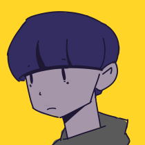

I sat in my car, unable to move it as the two cars have come to block me
 Blue
Blue
Do I need to try another way? Maybe there's something I can do next time
Regardless, I heard the acceleration noises from a distance.

Blue
I can't make it to Red from here
I listen to the rest of the voice mail
Finally, I will for the time to go back to the beginning, the pocketwatch glows, and I wait as the flow of time streams upwards